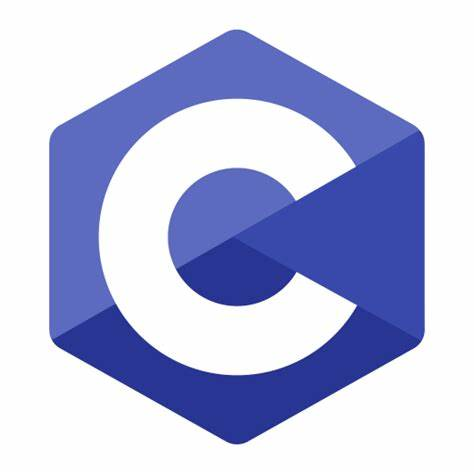
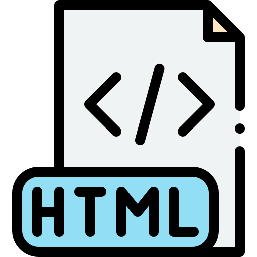

Skills
 Python
Python Machine Learning
Machine Learning Java
Java -  C
-  HTML
- Data Science
I am always seeking opportunities to enhance my skills and knowledge, constantly learning and adapting to the latest advancements in technology...
Python+91 8277411506
Email: vasudhajbhat@gmail.com